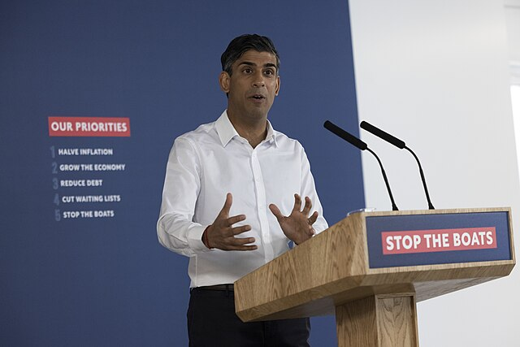
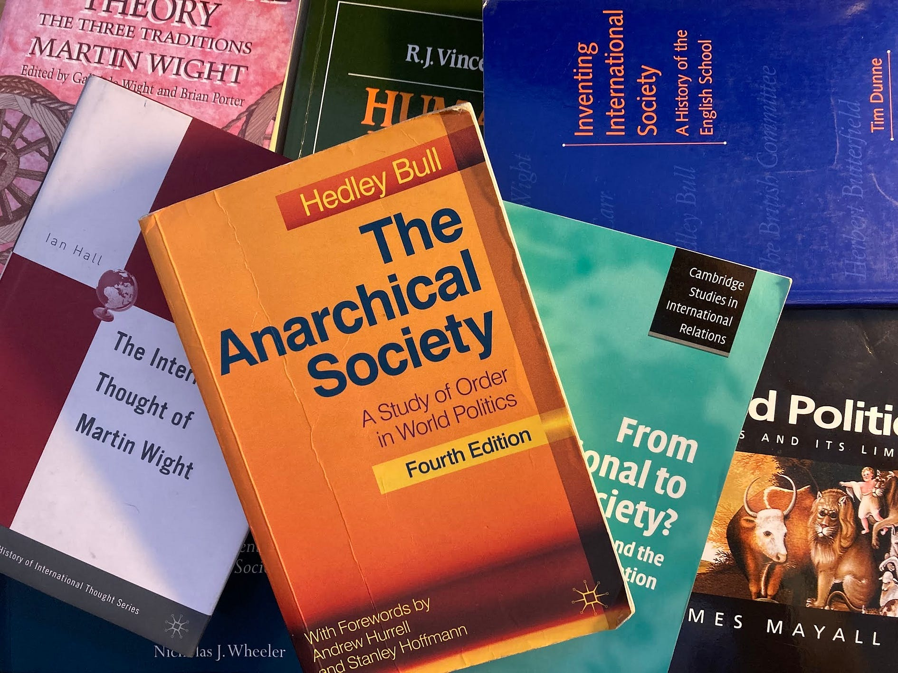
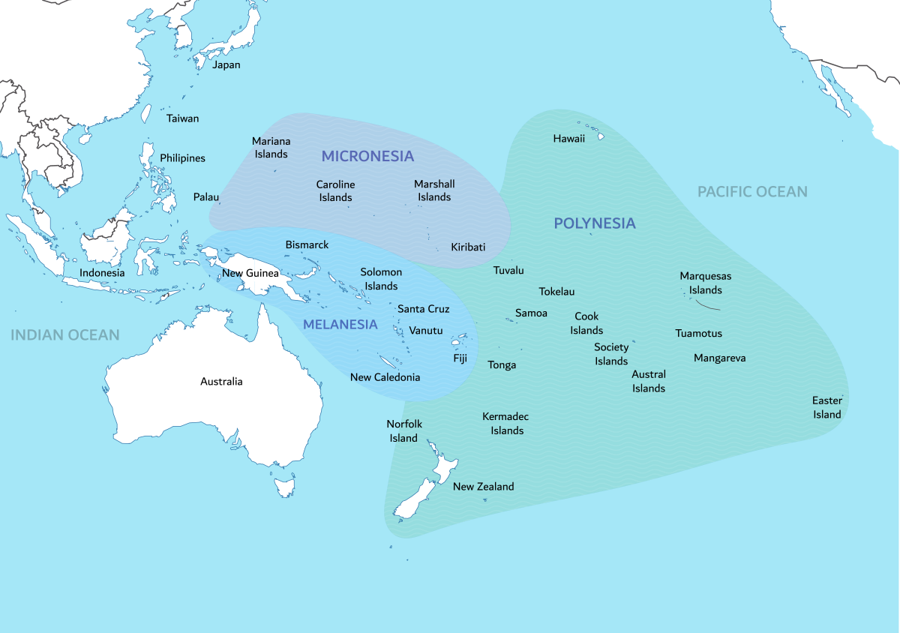

This website is currently under development. All elements and content are works in progress.
I UnderstandThe following article was written in response to a question given in an internship interview
As the UK gears up for the 2024 general election, a recent article regarding a YouGov poll published by The Telegraph has ignited speculation about the potential shift in leadership. According to the poll of over 13,000 potential voters, The Conservatives are projected to lead in 322 constituencies, dwarfing the opposition leader Sir Keir Starmer of the Labour Party, with a minority of only 164 seats.
READ MORE
The following article serves as my initial submission as content writer/reporter for otb.news
As the UK gears up for the 2024 general election, a recent article regarding a YouGov poll published by The Telegraph has ignited speculation about the potential shift in leadership. According to the poll of over 13,000 potential voters, The Conservatives are projected to lead in 322 constituencies, dwarfing the opposition leader Sir Keir Starmer of the Labour Party, with a minority of only 164 seats.
READ MORE
This essay served as a significant milestone in my pursuit of a Master's degree and involved undertaking all research, planning, and writing within a strict 14-day timeframe, intending to assess my progress during Term 1. Additionally, it served as an effective marker of my general ability for both myself and my tutors, following an extended break from writing of just over three years.
What are the core elements of the English School’s approach to IR? How, if at all, does it differ from realism?
This essay will argue the core elements of the English School’s approach to International Relations (IR), how they are based around and emphasise social cooperation, mutual interests and international society, as well as pluralism and historicism, and how...
READ MORE
The Pacific Island Cup 2024 is a personal endeavor born out of interest in Geography, Politics, Flags and History. After receiving exposure to nations within the Pacific through informal means, I have created a personal ranking system based on subjective factors, such as independence, location, rating looks and island usage.
| Island/Country | Owned or Indipendent? | Flag Rating | Atoll? | Location | Island Rating | Just a military base? | Total |
|---|---|---|---|---|---|---|---|
| Kiribati | 1 | 0.85 | 1 | 1 | 0.8 | 0 | 4.65 |
| The Marshall Islands | 1 | 0.85 | 1 | 0.6 | 0.6 | 0 | 4.05 |
| Palau | 1 | 1 | 1 | 0.2 | 0.6 | 0 | 3.8 |
| Micronesia | 1 | 0.8 | 1 | 0.45 | 0.4 | 0 | 3.65 |
| Tuvalu | 1 | 0.15 | 1 | 0.6 | 0.5 | 0 | 3.25 |